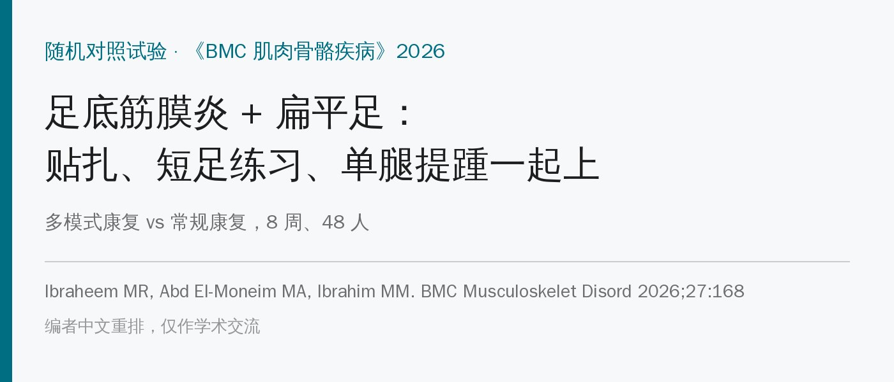
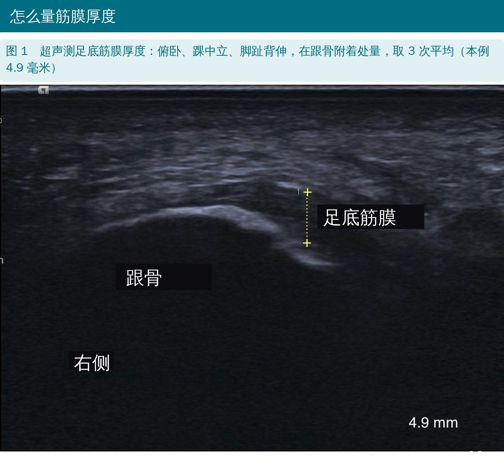
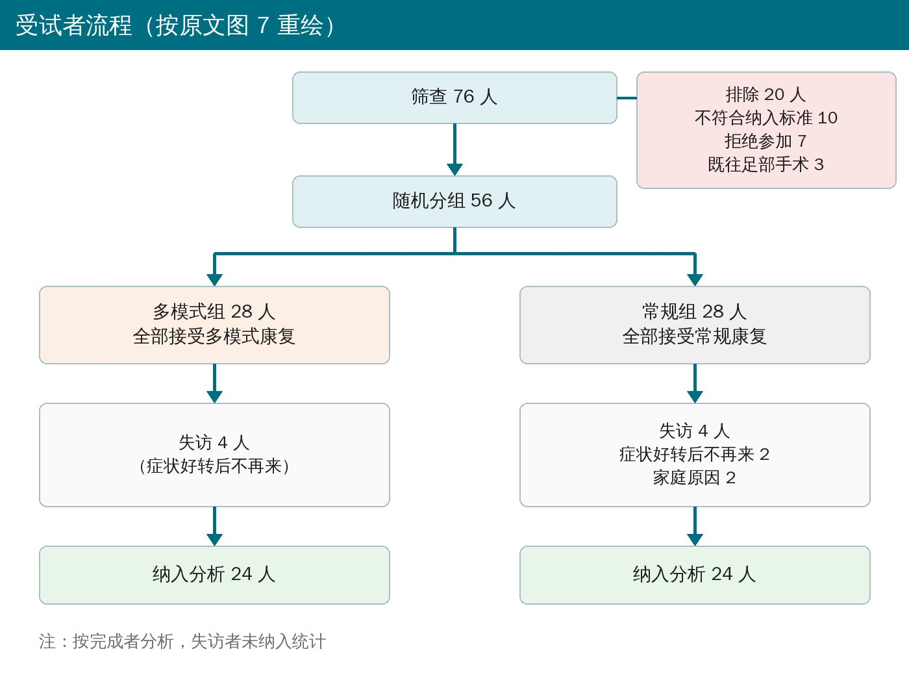
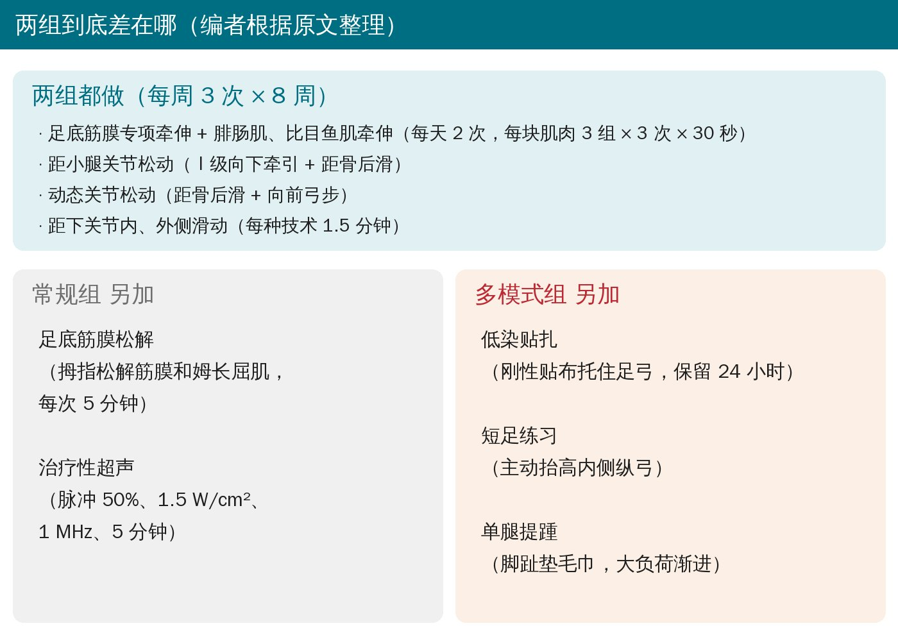
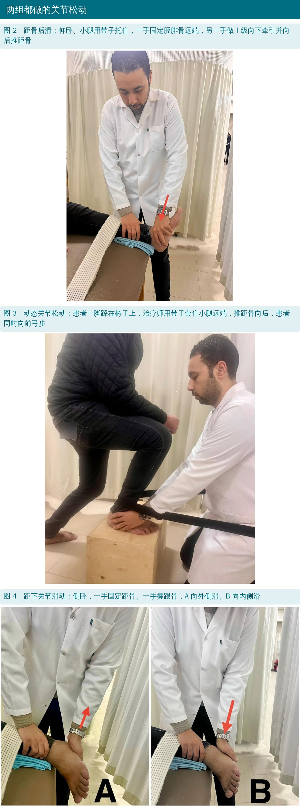
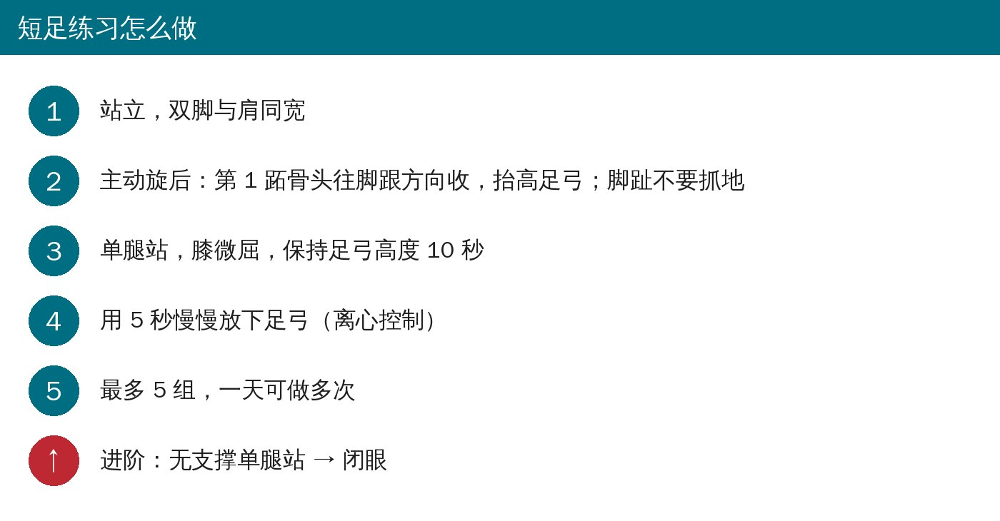
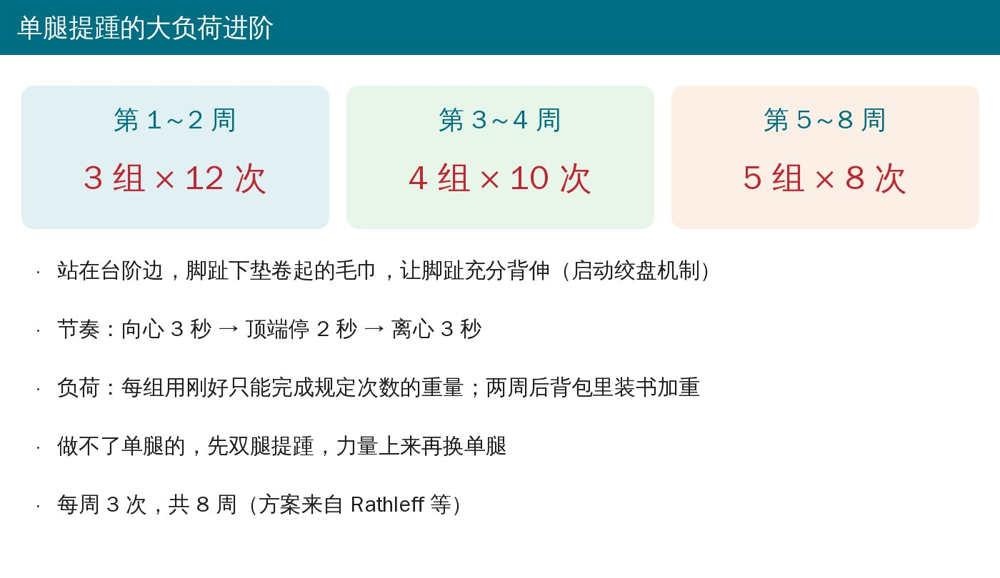
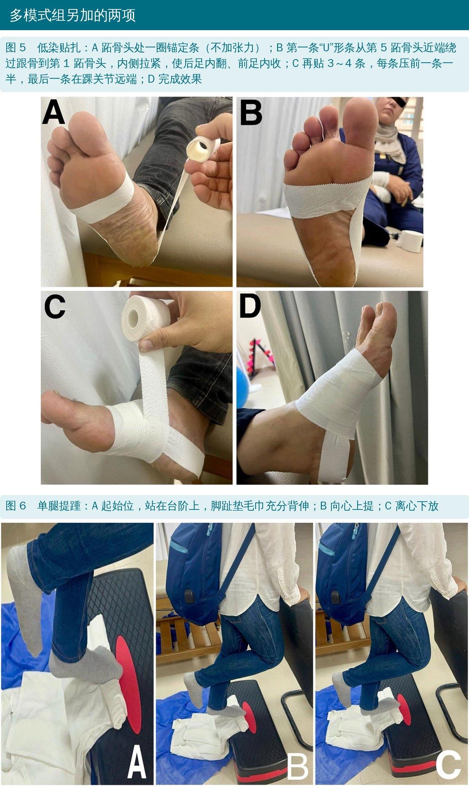
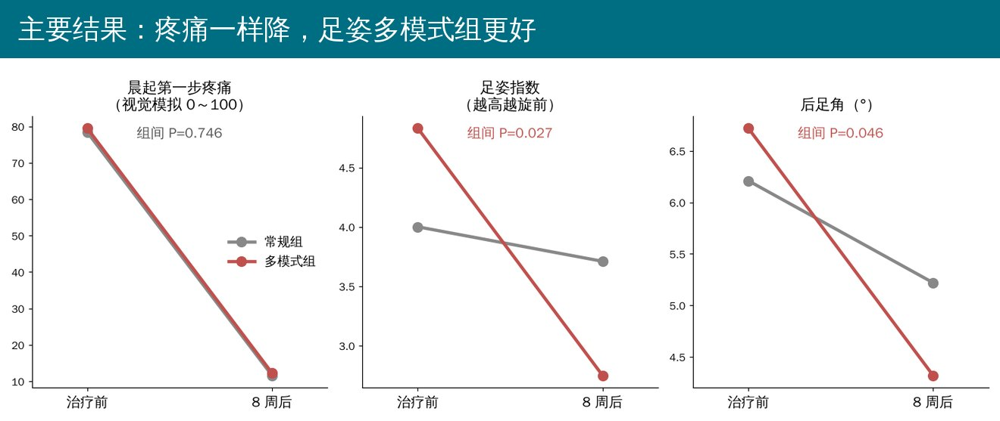

🔖原文信息（编者中文重排）
📚 文献信息
▪ Ibraheem MR, Abd El-Moneim MA, Ibrahim MM. The effect of multimodal rehabilitation program on pain, functional outcomes, and plantar fascia thickness in patients with plantar fasciitis: a randomized controlled trial. BMC Musculoskelet Disord. 2026;27:168.
▪ 作者来自埃及开罗大学物理治疗学院、荷鲁斯大学和爱资哈尔大学
▪ 单盲随机对照试验，临床试验注册号 NCT06456944
足底筋膜炎是足跟痛最常见的原因，典型表现是早上下床第一步最疼、久坐后起身疼、站久了疼。它其实更像退变和微小撕裂，叫“筋膜病”更准确。
风险因素里，足过度旋前（俗称足弓塌、扁平足倾向）很关键：距骨内收跖屈、跟骨外翻、内侧纵弓变平，足底筋膜被持续拉紧。所以作者设计的方案，除了常规的牵伸和松动，还加了“被动 + 主动”纠正足部力学的三项：贴扎托足弓、短足练习练足内在肌、单腿提踵大负荷加载。
• 对象：48 人完成研究（男 21、女 27），40～60 岁，单侧足跟痛 > 3 个月、晨起第一步痛、跟骨内侧结节压痛、绞盘试验阳性，足姿指数显示足旋前
• 排除：体重指数 > 30、下肢骨折手术史、跗管综合征、脂肪垫萎缩、半年内打过激素
• 56 人随机分两组，各 28 人；每组失访 4 人，最后各 24 人纳入分析
• 两组都是每周 3 次，共 8 周，同一位治疗师（第一作者）操作
• 主要结局：晨起第一步疼痛（视觉模拟 0～100 毫米）；次要结局：压痛阈、足功能指数、足姿指数、后足角、负重位背伸角度、超声测筋膜厚度

🔖原文图 1

🔖受试者流程

🔖两组对比
• 足底筋膜专项牵伸：坐位，患脚搭在对侧大腿上，抓住脚趾根部往上掰，直到感觉足底被拉紧；先慢后逐渐加大
• 小腿牵伸：弓步站，患腿在后，脚跟不离地往前倾；伸膝练腓肠肌、屈膝练比目鱼肌。每天 2 次，每块肌肉 3 组 × 3 次 × 保持 30 秒
• 距小腿关节松动：仰卧，小腿用带子托住；一手固定胫腓骨远端，另一手做Ⅰ级向下牵引 + 距骨向后滑
• 动态关节松动：患脚踩在椅子上，治疗师用带垫的带子套住小腿远端，保持距骨后滑，患者同时向前弓步
• 距下关节松动：侧卧，一手固定距骨、一手握跟骨，做外侧滑和内侧滑
• 每种松动技术 1.5 分钟

🔖原文图 2～4
• 足底筋膜松解：俯卧、伸膝、跟骨外翻、踝背伸，伸展脚趾，用拇指从近端到远端松解足底筋膜和姆长屈肌，每次 5 分钟，强度按患者反应调整
• 治疗性超声：俯卧，脉冲 50%、1.5 W/cm²、1 MHz，打在筋膜近端附着处最痛点，5 分钟
① 低染贴扎（被动托足弓）：用 5 厘米宽的刚性贴布，贴前洗净擦干脚。
• 锚定条：跖骨头附近绕前足一圈，不加张力
• 第一条“U”形条：从第 5 跖骨头近端开始，向后绕过跟骨到第 1 跖骨头，内侧拉紧，使后足内翻、前足内收
• 再贴 3～4 条，每条压住前一条一半宽度，最后一条在踝关节远端
• 贴布保留 24 小时
② 短足练习（主动抬足弓）：比卷毛巾更能激活姆展肌、维持内侧纵弓。

🔖短足练习步骤
③ 单腿提踵（大负荷加载）：针对绞盘机制，参照 Rathleff 等的方案。

🔖提踵进阶

🔖原文图 5、6

🔖主要结局
• 两组 8 周后几乎所有指标都明显改善（P < 0.001）：晨起疼痛从约 79 降到约 12（远超 19 毫米的最小临床重要差异），足功能指数总分从约 75 降到约 12，背伸角度增加约 11°，筋膜厚度变薄约 1 毫米
• 组间只有两项有差别：足姿指数（多模式组 4.83→2.75，常规组 4.00→3.71，P = 0.027）和后足角（6.72°→4.32° vs 6.21°→5.22°，P = 0.046）
• 常规组的足姿指数前后没有显著变化（P = 0.097）
• 两组筋膜厚度治疗后都是 4.54 毫米，仍高于无痛人群的 2.2～4.0 毫米
• 部分人长时间贴扎出现过敏、皮肤破损、瘙痒，撕掉后消退
• 两组共用的部分太“强”：牵伸和关节松动本身就是 A 级证据，两组都做，额外的三项在疼痛、功能上没显出差别
• 足姿指数的差别临床意义不明：多模式组基线就更旋前（4.83 vs 4.00），组间差约 1 分；后足角组间差约 0.9°。贴扎是在测量时还贴着吗？原文没交代
• 只有 8 周，没有随访；作者自己也说需要更长时间才可能看出临床差异
• 盲法其实不成立：方法说“单盲”，但第一作者既做治疗又做评估，局限性里也承认评估者和治疗者都没盲
• 只分析了完成者（每组各失访 4 人，多为症状好转后不来），没有意向性分析
原文里对不上的地方：
• 距下关节松动写成“外侧滑改善外翻，内侧滑也改善外翻”，其中一个应为内翻
• 写的是“简单随机”，但事先准备了 A、B 各 28 个信封，这其实是固定比例分配，不是简单随机
• 常规组身高 168.25 ± 18.77 厘米，标准差大得反常；按平均体重 88.91 千克和平均身高算，体重指数约 31.4，高于排除标准 30，和表里写的 28.74 对不上
• 后足角定义为“负值是外翻、正值是内翻”，但这群人都是旋前足，报告的数值却都是正的（约 4°～7°）
• 排除标准体重指数单位写成“kg/cm²”；结果部分把足功能指数写成“FFF”；多处把“taping”拼成“tapping”
• 样本量：计算得 48 人，“每组再加 16%（8 人）”，最终每组 28 人，表述前后不一
• 筋膜厚度组间 P 值，正文写 1.000，表 2 写 0.99；资助声明一句写开放获取费用由埃及基金资助，紧接着又写“未获资助”
• 足底筋膜专项牵伸 + 小腿牵伸 + 踝和距下关节松动，是值得先做好的底子：两组靠它就把疼痛降了 85% 左右
• 对足旋前明显的人，加低染贴扎、短足练习、单腿提踵，能多改善足姿；但短期内不一定多减痛
• 单腿提踵：脚趾垫毛巾、3 秒上 2 秒停 3 秒下，按 12 次 → 10 次 → 8 次逐步加重
• 短足练习：抬足弓不卷趾，单腿保持 10 秒、5 秒慢慢放
• 贴扎注意皮肤反应，长时间贴可能过敏或破皮
• 疼痛好了，筋膜厚度不一定恢复正常，负荷管理要继续
原文表 1 两组基线资料
| 变量 | 常规组（24 人） | 多模式组（24 人） | P 值 |
|---|---|---|---|
| 年龄（岁） | 50.37 ± 6.26 | 47.70 ± 4.75 | 0.103 |
| 体重（千克） | 88.91 ± 19.29 | 85.41 ± 8.28 | 0.418 |
| 身高（厘米） | 168.25 ± 18.77 | 173.25 ± 7.55 | 0.232 |
| 体重指数（kg/m²） | 28.74 ± 1.74 | 28.37 ± 1.42 | 0.413 |
| 性别（男∶女） | 10（41.7%）∶14（58.3%） | 11（45.83%）∶13（54.17%） | 0.771 |
| 患侧（右∶左） | 13（54.2%）∶11（45.8%） | 13（54.2%）∶11（45.8%） | 0.99 |
年龄、体重、身高为均值 ± 标准差，独立样本 t 检验；性别、患侧为人数（百分比），卡方检验。
原文表 2 组内与组间比较
| 指标 | 时间 | 常规组 | 多模式组 | 组间差（95% 置信区间） | P 值 |
|---|---|---|---|---|---|
| 晨起疼痛（0～100） | 治疗前 | 78.42 ± 14.44 | 79.50 ± 12.25 | −1.08（−8.86～6.7） | 0.781 |
| 治疗后 | 11.62 ± 8.27 | 12.29 ± 5.68 | −0.67（−4.79～3.46） | 0.746 | |
| 组内变化（下降 %） | 66.79（85.18%） | 67.21（84.54%） | 均 < 0.001 | ||
| 足功能指数·疼痛 | 治疗前 | 80.29 ± 12.13 | 83.60 ± 10.08 | −3.31（−9.79～3.17） | 0.309 |
| 治疗后 | 14.74 ± 10.81 | 17.07 ± 9.66 | −2.33（−8.29～3.63） | 0.436 | |
| 组内变化 | 65.55（81.63%） | 66.53（79.58%） | 均 < 0.001 | ||
| 足功能指数·失能 | 治疗前 | 74.22 ± 14.31 | 76.02 ± 13.23 | −1.795（−9.80～6.21） | 0.654 |
| 治疗后 | 9.56 ± 7.81 | 11.97 ± 7.32 | −2.42（−6.82～1.98） | 0.274 | |
| 组内变化 | 64.67（87.13%） | 64.04（84.25%） | 均 < 0.001 | ||
| 足功能指数·活动受限 | 治疗前 | 59.42 ± 19.84 | 64.82 ± 16.37 | −5.40（−15.96～5.17） | 0.309 |
| 治疗后 | 6.01 ± 9.12 | 8.02 ± 9.49 | −2.00（−7.41～3.40） | 0.460 | |
| 组内变化 | 53.41（89.88%） | 56.80（87.64%） | 均 < 0.001 | ||
| 足功能指数·总分 | 治疗前 | 74.13 ± 12.94 | 77.04 ± 11.07 | −2.92（−9.91～4.08） | 0.406 |
| 治疗后 | 10.92 ± 8.44 | 13.22 ± 7.73 | −2.30（−7.00～2.41） | 0.330 | |
| 组内变化 | 63.20（85.27%） | 63.82（82.84%） | 均 < 0.001 | ||
| 足姿指数 | 治疗前 | 4.00 ± 1.67 | 4.83 ± 2.10 | −0.83（−1.94～0.27） | 0.135 |
| 治疗后 | 3.71 ± 1.57 | 2.75 ± 1.33 | 0.96（0.11～1.80） | 0.027 | |
| 组内变化 | 0.3（7.5%），P = 0.097 | 2.08（43.06%），P < 0.001 | |||
| 筋膜厚度（毫米） | 治疗前 | 5.79 ± 1.12 | 5.51 ± 0.89 | 0.28（−0.31～0.87） | 0.345 |
| 治疗后 | 4.54 ± 0.71 | 4.54 ± 0.79 | 0.0（−0.44～0.44） | 0.99 | |
| 组内变化 | 1.25（21.45%） | 0.97（17.45%） | 均 < 0.001 | ||
| 后足角（°） | 治疗前 | 6.21 ± 2.07 | 6.72 ± 1.27 | −0.51（−1.51～0.49） | 0.311 |
| 治疗后 | 5.22 ± 1.83 | 4.32 ± 1.16 | 0.908（0.02～1.80） | 0.046 | |
| 组内变化 | 0.99（15.94%） | 2.40（35.86%） | 均 < 0.001 | ||
| 背伸角度（°） | 治疗前 | 26.96 ± 4.55 | 26.33 ± 5.17 | 0.63（−2.21～3.46） | 0.659 |
| 治疗后 | 38.37 ± 4.37 | 38.00 ± 2.67 | 0.375（−1.73～2.48） | 0.722 | |
| 组内变化（增加 %） | 11.42（42.37%） | 11.67（44.32%） | 均 < 0.001 | ||
| 压痛阈（千克） | 治疗前 | 1.98 ± 0.55 | 2.07 ± 0.41 | −0.08（−0.36～0.20） | 0.571 |
| 治疗后 | 3.65 ± 0.99 | 3.71 ± 0.53 | −0.06（−0.52～0.41） | 0.801 | |
| 组内变化（增加 %） | 1.66（84.34%） | 1.64（79.61%） | 均 < 0.001 |
均值 ± 标准差；2 × 2 混合设计多元方差分析。组内变化括号内为变化百分比。
欢迎关注骨科康复小黄公众号，获取更多物理治疗的专业知识！
📄参考文献：
Ibraheem MR, Abd El-Moneim MA, Ibrahim MM. The effect of multimodal rehabilitation program on pain, functional outcomes, and plantar fascia thickness in patients with plantar fasciitis: a randomized controlled trial. BMC Musculoskelet Disord. 2026;27:168. doi:10.1186/s12891-026-09562-x
原文以知识共享署名 4.0 协议（CC BY 4.0）发表。本文为中文解读，照片引自原文图 1～6（编者加中文标注，超声图英文改为中文，衣物品牌标签已模糊），流程图按原文图 7 重绘，方案对比卡、短足练习卡、提踵进阶卡与结果图为编者中文绘制，表格为编者翻译。